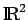

Inhalt Index DeskTop Bronstein

 Funktionalanalysis Vektorräume Konvexe Teilmengen und konvexe Hülle
Funktionalanalysis Vektorräume Konvexe Teilmengen und konvexe Hülle


Eine Teilmenge C eines reellen Vektorraumes  heißt konvex, wenn für jedes Paar von Vektoren alle Vektoren der Form ebenfalls zu C gehören. Mit anderen Worten, die Menge C ist konvex, wenn sie mit je zwei Elementen die gesamte Verbindungsstrecke
heißt konvex, wenn für jedes Paar von Vektoren alle Vektoren der Form ebenfalls zu C gehören. Mit anderen Worten, die Menge C ist konvex, wenn sie mit je zwei Elementen die gesamte Verbindungsstrecke
| (12.16) |
auch Intervall genannt, zwischen x und y enthält. Beispiele konvexer Mengen in  sind die mit A und B bezeichneten Mengen in der folgenden Abbildung.
Siehe dazu auch Abschnitt Trennung konvexer Mengen.
Der Durchschnitt beliebig vieler konvexer Mengen ist wieder eine konvexe Menge, wobei vereinbarungsgemäß die leere Menge als konvex angesehen wird. Demzufolge existiert zu jeder Teilmenge  eine kleinste konvexe Menge, die E enthält, nämlich der Durchschnitt aller konvexen und E enthaltenden Teilmengen von
eine kleinste konvexe Menge, die E enthält, nämlich der Durchschnitt aller konvexen und E enthaltenden Teilmengen von  . Sie heißt konvexe Hülle der Menge E und wird mit bezeichnet. Die konvexe Hülle ist mit der Menge aller konvexen Linearkombinationen von Elementen aus E identisch, d.h., besteht aus allen Elementen der Form , wobei
. Sie heißt konvexe Hülle der Menge E und wird mit bezeichnet. Die konvexe Hülle ist mit der Menge aller konvexen Linearkombinationen von Elementen aus E identisch, d.h., besteht aus allen Elementen der Form , wobei  beliebige Elemente aus E sind und der Gleichung genügen. Lineare und affine Teilräume sind stets konvex.
beliebige Elemente aus E sind und der Gleichung genügen. Lineare und affine Teilräume sind stets konvex.